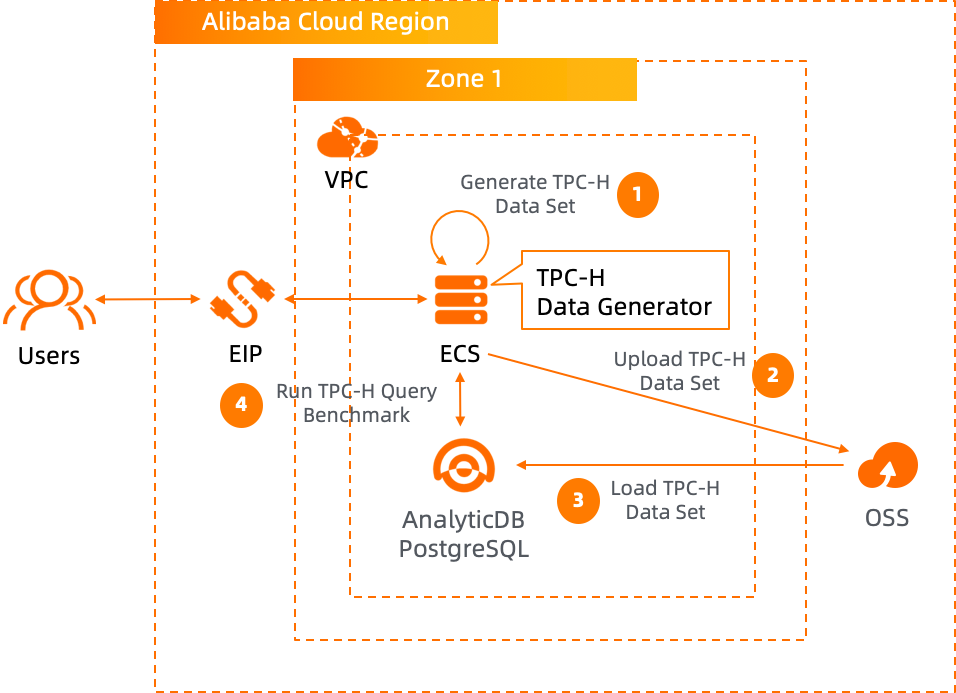
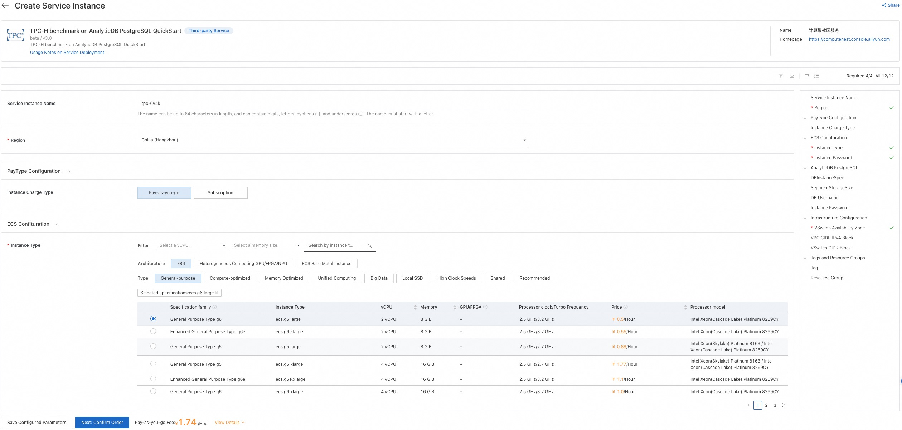
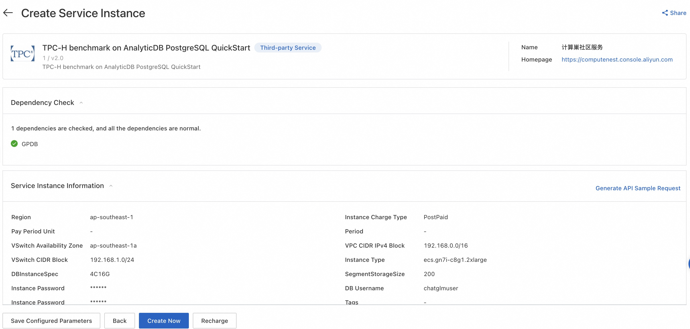
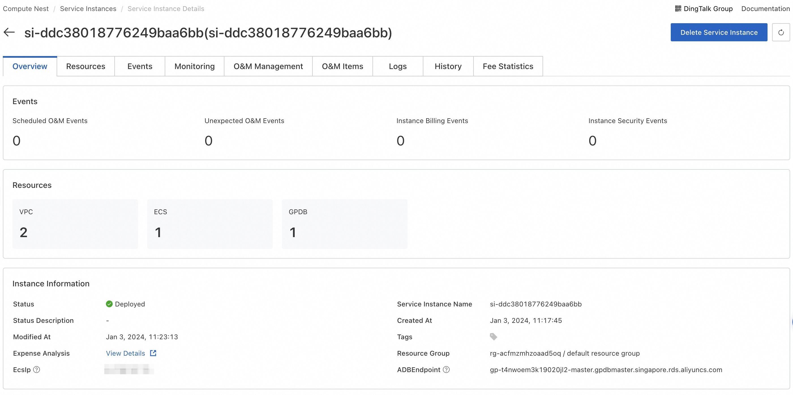

TPC-H benchmark on GPDB
Overview
About TPC-H As stated in the TPC Benchmark™ H (TPC-H) specification:
“TPC-H is a decision support benchmark. It consists of a suite of business-oriented ad hoc queries and concurrent data modifications. The queries and the data populating the database have been chosen to have broad industry-wide relevance. This benchmark illustrates decision support systems that examine large volumes of data, execute queries with a high degree of complexity, and give answers to critical business questions.”
For more information, see TPC-H specifications.
This article describes how to use Compute Nest to quickly deploy the resources required for this service.
Deployment architecture:

Billing instructions
The cost of this service in computing nest deployment mainly involves:
- AnalyticDB for PostgreSQL Instance
- Traffic bandwidth charges
- ECS Instance
Permissions required
Deploying this service instance requires accessing and creating some Alibaba Cloud resources. Therefore, your account needs to include permissions for the following resources.
Note: You only need to add this permission when your account is a RAM account.
| Permission policy name | Remarks |
|---|---|
| AliyunECSFullAccess | Permission to manage cloud server service (ECS) |
| AliyunVPCFullAccess | Permission to manage private network (VPC) |
| AliyunROSFullAccess | Permission to manage Resource Orchestration Service (ROS) |
| AliyunGPDBFullAccess | Permission to manage AnalyticDB for PostgreSQL (GPDB) |
| AliyunComputeNestUserFullAccess | Manage user-side permissions for the ComputeNest service (ComputeNest) |
Deployment process
Deployment parameter
| Parameter | Explanation |
|---|---|
| Service Instance Name | The name can be up to 64 characters in length, and can contain digits, letters, hyphens (-), and underscores (_). The name must start with a letter. |
| Region | The region where the service instance is deployed. |
| Instance Charge Type | Charge type for the service instance. |
| Instance Type | ECS instance type |
| Instance Password | Server login password, Length 8-30, must contain three(Capital letters, lowercase letters, numbers, ()`~!@#$%^&*_-+={}[]:;'<>,.?/ Special symbol in) |
| DBInstanceSpec | The AnalyticDB for PostgreSQL instance spec |
| SegmentStorageSize | Segment Storage Size |
| DB Username | Primary account name of the database instance. |
| DB Instance Password | DB login password, Length 8-30, must contain three(Capital letters, lowercase letters, numbers, ()!@#$%&*-+= Special symbol in) |
| VSwitch Availability Zone | The availability zone of the VSwitch. |
| VPC CIDR IPv4 Block | The ip address range of the VPC in the CidrBlock form. |
| VSwitch CIDR Block | Must belong to the subnet segment of VPC. |
Deployment steps
1. Visit Deployment Link and fill in the deployment parameters as prompted: 
- After filling in the parameters, you can see the corresponding inquiry details. After confirming the parameters, click Next: Confirm Order. After confirming the order is completed, agree to the service agreement and click * Create Now* to enter the deployment stage. 
Validation results
After waiting for the service deployment to be successful, connect to ECS remotely and continue running TPC-H by referring to Step 3 of the document. 